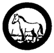

Animal Study
(Animals, in the zoological sense, include all living organisms other than plants life - from amoeba up through man. However - since birds, reptiles, amphibians, and insects are covered in other Merit Badge subjects - choose other examples of animal life for these requirements).
- Make five (5) field trips of at least two hours each (preferably on different months of the year) to observe wild animal life. Keep records of such trips, listing all animals seen, with date, place, nature of locality, and observations of animals and their habits. (Photographs, sketches, track casts, etc. will add interest to this record).
- Using the "keys" of the modern system of classifying animal life, classify at least five (5) animals of different phyla which you yourself select.
- Find out the life processes that are common to all animal life (birth, self-protection, feeding, breathing, etc.). Keep a record of personal observation of the life cycle and habits of at least two (2) animals of different phyla.
- On a map of your locality (showing such things as forests, plains, streams, marshes, and areas, etc.), indicate animals found in each habitat. Know what is being done in the country to protect wild animal life.
- Carry out one of the following projects:
- Keep a young animal (completely weaned from its mother) such as a rabbit or a guinea pig for at least three (3) months. Keep a record of its life cycle and habits.
- Maintain an aquarium or "toad pan" for at least three (3) months. Stock from local ponds, streams, or marshes. Watch development from egg on - of frogs, toads, turtles, fish, or whatever animal you have chosen for special observation. Keep a record of its life cycle and habits.
- Submit at least ten (10) photographs or sketches (based on your own observation) of microscopic life in the field for at least three (3) months.
|